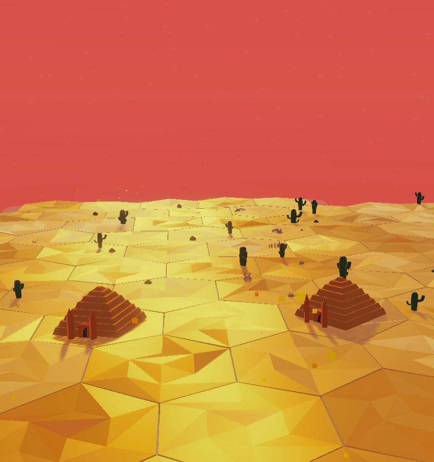
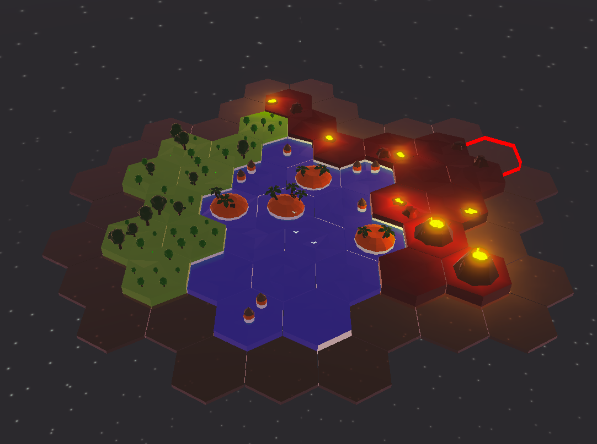
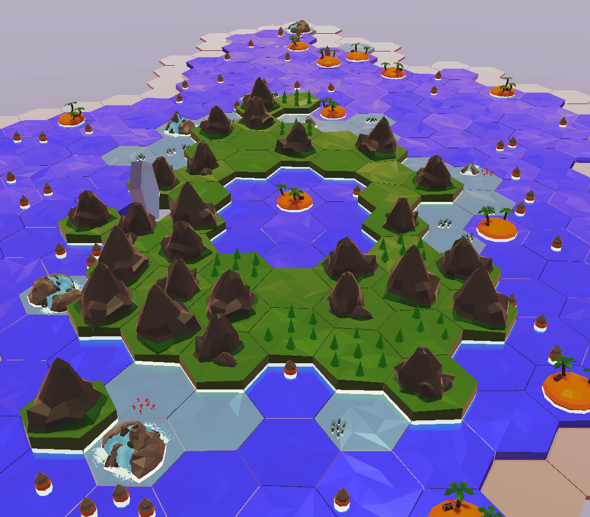

Biomes
Biomes est un jouet crée dans le cadre de notre projet de premier semestre en seconde année a l'ICAN. Le jouet permet au joueur de créer un monde à base de tuiles "biome" et de les regarder interagir entre elles.J'ai, pour ce projet, realisé le sound design, composition et intégration via Fmod dans le projet Unity ainsi que programmé notamment les interactions entre tiles.
Pour le sound design, les sections de la musique ont été composer sur Ableton, ainsi que la création des SFX. L'intégration par Fmod m'a permis de créer une musique en partie aléatoire et des SFX avec des variations. Il s'agit du projet de jeu le plus complet auquel j'ai participer. complet.
J'ai travaillé sur ce projet avec 3 camarades de classe, prenant en charge la direction artistique, la modélisation 3D et une aide sur la programmation.



Biomes sera bientôt téléchargeable depuis itch.io